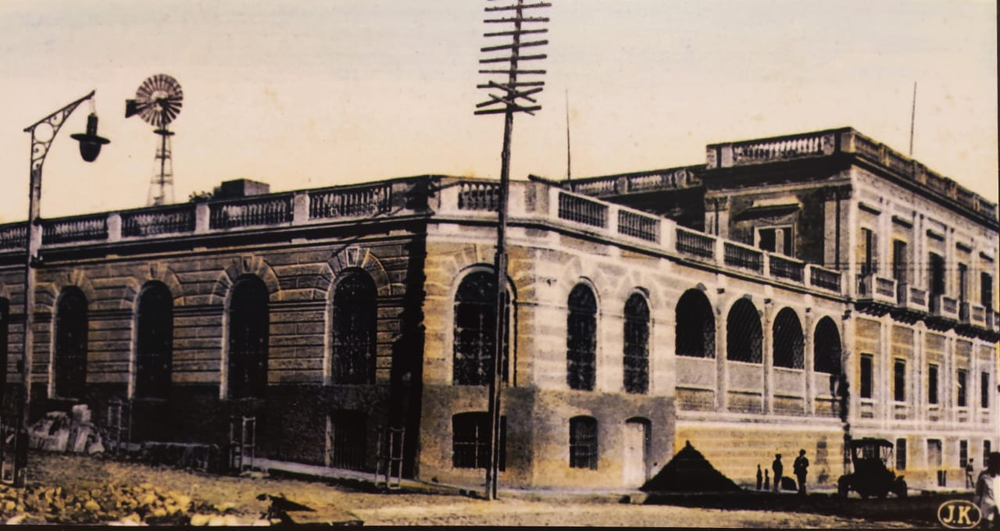

Historical aspects
Mr. Luiggi Patri, was a wealthy immigrant of Italian origin, a native of Genoa, who, as a young man, arrived in South America and dedicated himself to commerce. He arrived in Paraguay in the first decade of the 1900s.
He had previously settled in Corrientes (Argentina), where he became a supplier of the Imperial Army of Brazil, for which he came to amass a great fortune, this activity he carried out until the conclusion of the War against the Triple Alliance (1864- 1870).
At the end of the war, he arrived in Paraguay, along with his business partner, Jorge Casaccia, and both continued the business as suppliers. Patri became an important landowner, providing capital for the railway and even became the owner of the railway service, as well as founder of the Banco de Comercio, director of the National Bank of Paraguay and creator of an important yerba mate company.
With effort and luck, he amassed a great fortune and acquired a property equivalent to one block (1 Ha.) He had a mansion built for his family home. He was also a great landowner and has been considered the wealthiest man in post-war Paraguay. Luiggi Patri was one of the founders and honorary president of the "Societá Italiana di Mutuo Soccorso", an Italian charitable association founded in the year 1871.
The migratory current began in the mid-nineteenth century and lasted until the 1930s; The largest contingent being that of the Swedes, followed by that of the Danes and to a lesser extent the Norwegians, Finns, Spaniards, Italians, etc.
With reference to the study of the building: The builder of Swedish origin Karl Gustaff Rehnfeldt, who was in charge of the project and the construction with A. Pettirossi. The construction was carried out according to the prevailing stylistic trend at that time: Italianate or Neoclassical, with a cloister or central internal courtyard, the style of the European mansions of the time, with a front between three (3) streets.
The work is organized in two (2) floors or levels, (on Alberdi street) a large patio that separates it from the rear sector that has three (3) floors or levels, it is observed that all the levels are interconnected by an important staircase and on the ground floor by the wide gallery.
To carry out the building construction work, materials from our country were used: foundation stones, ceramic and plastered bricks, among others, which were reinforced with metal structures (vaults) for the upper floor (second floor).
Upon the death of its owner, Mr. Patri (year 1904), the property passed into the hands of his heirs, and for some time the "Paraguayan Institute" functioned there, a private entity for cultural purposes, founded in 1895. In 1912, the National Government acquired the property of the Patri family for the residence of the then President of the Republic Don Liberato Marcial Rojas Cabral, but said use never materialized.
In 1913, the building was handed over to house the Post and Telegraph Office. Today it is called the National Post Office (DINACOPA). In 2018, the Ministry of Public Works and Communications (MOPC) through the Public Works Directorate (DOP) called for a National Public Tender to carry out restoration work on the building.
The winning company for the building restoration has complied in the presentation of the Intervention Protocol of the General Directorate of Cultural Heritage of the National Secretariat of Culture (SNC,) which constitutes one of the important requirements for carrying out interventions in buildings. patrimonial
Formal Description: From the point of view of applied technology, the Neoclassical building pattern is observed, which marks the architecture that occurs with the greatest boom in the city of Asunción and important cities in the interior of the country. The architecture of the façade emerges without neglecting the colonial architecture that can be seen in the gallery on the ground floor.
The tripartite reading of: Base, Body and Crowning or auction is observed. The compositional lines respect the harmony and balance forming the stylistic resources of the building.
The old building is organized around a central courtyard, with an important external "L" shaped staircase that leads to the upper floor. Typology Architectural floor plan in double U with a central patio.
Description: The building is located on a large corner lot, slightly higher than Alberdi Street, occupying almost a large part of the block. It is built on the municipal boundary or sidewalk, inside there is a wide gallery with semicircular arches. This gallery communicates the interior spaces with the exterior or patio. The building reflects the way of life of a certain social class. The rooms (now offices) are arranged in a linear fashion, one next to the other, integrated into the central courtyard through the perimeter gallery. The environments or rooms are spacious and high-rise.
The main facade is organized based on: a) Plinth with splash-type plaster treatment, b) Body, with padded-type plaster treatment, moldings, pilasters, various ornamentations, and 3) Crowning is made up of decorated cornices and parapets with Italianate style balusters.
On the upper floor, it has cantilevered balconies, with decorated corbel supports that support the vault and masonry balusters. The rise of the balconies corresponds to the post-war era of 1870, when the urban mansions that involved constructions of two (2) levels emerged. On the third level or terrace, there is also an area of roofed spaces with tiles and tiles on wood (offices) and a railing with balusters.
For its construction, materials typical of our country were used, such as: raw stone foundations extracted from quarries located in the interior of the country such as Emboscada or Altos, ceramic bricks for the masonry (of different thicknesses) and plaster, which make up the building structure; Catalan vaults that serve as the ceiling of the ground floor.
The roof or cover is made up of Catalan vaulting and on the third level, there is an addition (new construction-office) that has a roof of tiles and tiles on wooden braces (beams, braces, rafters). The floors are made of granite in the main access and stairs, and to a lesser extent calcareous mosaics of various designs, the patio has ceramic brick floors and in certain areas stones, in addition, a large plant bed in the center of it. etc.
The openings (doors and windows) on the ground floor and on the upper floor are made of carved and carved wood, the bars are artistically designed wrought iron. In the great iron door or gate cancel it is observed that curved lines and filigree motifs predominate, which in the upper part bears the initials of the owner, crowning the main access.
In the inner courtyard there is an important "L" shaped staircase with a masonry balustrade, it leads to the upper floor of the building and the terrace that has masonry baluster finishes.
Degree of valuation: The Degree of valuation consigned by the Historical Center Office of the Municipality of Asunción. It is part of the National Heritage It is protected by Law 5621/16 "On the Protection of Cultural Heritage", Resolution No. 23/2006, Resolution No.: 26/2005 of the General Directorate of Cultural Assets / VMC / MEC that protects several buildings from the time of the governments of Don Carlos Antonio López and Francisco Solano López.
The Municipality of Asunción has inventoried and cataloged it through HJM Ordinance No. 28/96 and 35/96. Since 2013, this building has been owned by the Paraguayan Post Office. (DINACOPA) Corresponds to representative buildings of an era.
Remarks: DINACOPA (National Post Office of Paraguay) was created by Law No. 4016/2010 with legal status under Public Law with an autarchic character and its own assets and depends on the Presidency of the Republic. It replaced the Post Office that depended on the Ministry of Public Works and Communications (2016 Management Report).
It has a Postal Museum of the Paraguayan Post (year 1943) It has an excellent collection of personal property, which is located in a room within the same building (Alberdi Street No. 130).
The building, together with other buildings and squares, correspond to one of the sites of historical, patrimonial and civic value in Asunción and throughout the country. Currently, it is expected that the building intervention process, its restoration and enhancement will continue, since it is being carried out slowly by the Ministry of Public Works and Communications through the Public Works Directorate in collaboration with the Ministry of Urban Planning, Housing and Habitat
Bibliography
Gutiérrez Ramón Arq. Urbanistic and Architectural Evolution of Paraguay-1537-1911. Comuneros Editions- Year 1983-Asunción-Paraguay. pages 66-67.
www.correoparaguayo.gov.py
www.mopc.gov.py
Plan for the revitalization of the Historic Center of Asunción-General Report-Volume I / Volume I-Municipality of Asunción-year 1991.
Newspaper article "El Ateneo Paraguayo -Luis Verón-abc magazine (VII/29/1993).